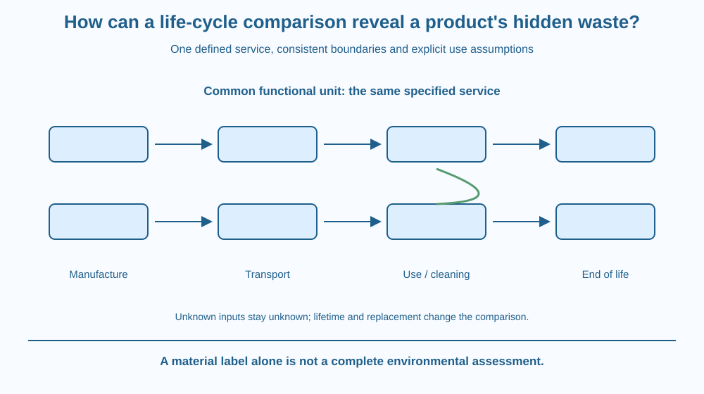

Compare products using the same defined service and a clear life-cycle boundary. Trace materials through manufacture, transport, use and end of life. Distinguish a complete-looking product from its wider resource and waste pathways without assigning unsupported environmental scores.
One container looks durable; another looks lightweight. Judging only their appearance at the shop leaves out extraction, manufacturing, transport, cleaning and what happens after use.
A reusable item may require more material initially but serve many uses. A disposable item may require repeated replacement. Neither label alone determines the better result for every setting.
The useful comparison begins with the service to be provided. Only then can the required products and associated processes be counted on a common basis.
A life-cycle assessment considers relevant inputs, outputs and potential environmental effects across a product system. A classroom map can introduce the logic without claiming to perform a complete formal assessment.
The functional unit defines the service being compared. For example, an invented study goal might be carrying a specified lunch portion for 100 school days under stated hygiene and performance conditions. The number defines the model service, not a measured national usage statistic.
The system boundary states which processes are included. A broad comparison can cover raw materials, manufacturing, transport, use and end-of-life handling. Excluding one major stage can change the apparent ranking.
A durable container's manufacture is allocated across the number of useful services it actually provides. If it is lost after a few uses, the assumed lifetime benefit changes. Calling an item reusable does not establish its real reuse count.
Use-stage processes can matter. Washing requires water, energy and cleaning materials under relevant conditions. Their contributions should be recorded rather than ignored because they occur after the purchase.
Replacement and end of life also matter. Recycling, disposal and recovery depend on actual local routes and material condition. A symbol on an item is not proof that every unit enters the intended route after use.
Different impact categories can tell different stories: resource use, climate-related emissions, water use or waste need not move in the same direction. One attractive number should not silently stand for every environmental consequence.
Data quality and uncertainty are part of the comparison. A classroom map can mark unknown quantities and test scenarios instead of inventing a percentage improvement. A fair conclusion states which service, boundary and assumptions produced it.
Draw two parallel product routes serving the same defined task. Place manufacture, transport, use and end-of-life boxes along each. Add replacement loops wherever another item is required to complete the service.
Now shorten the durable item's assumed useful life and trace the added replacements. Then change the washing method in a second scenario. The material's name stayed the same, but the system result can change.
Keep separate columns for different impact questions. This prevents a low solid-waste route from automatically being declared lowest in every other category. The model compares systems delivering a function, not two isolated objects on a desk.
The SVG shows two product systems sharing one functional-unit banner. Each has manufacture, transport, use and end-of-life stages. Reuse and replacement arrows identify different ways to complete the service.
Unknown input and output fields remain explicitly unmeasured. A boundary outline shows what belongs in the model and a scenario note identifies assumed lifetime and cleaning conditions.
The diagram supplies no real product score, price or carbon-saving percentage. Its purpose is to expose hidden pathways and assumptions before a conclusion is made, not to advertise a material as universally best.

Indian households and schools compare lunch containers, bottles and packaging under different local conditions. The same product can have different use patterns, washing arrangements and collection routes in different places.
A purchase label rarely contains all the information needed for a full life-cycle comparison. Asking about service life and local recovery can reveal missing evidence, but the classroom model should not pretend to resolve every real decision without data.
This lesson differs from a waste audit of one organisation's incoming and discarded material. Here the main target is comparing two product systems on a common service basis across stages beyond the place of use.
Use paper and two fictional container designs. No purchase or waste handling is needed.
Keep unknowns visible rather than filling them with plausible-looking numbers. The exercise is a boundary and scenario map, not a measured formal assessment. It should produce better questions before a recommendation, not an unsupported winner.
Why could comparing one reusable container with one disposable container be unfair if the task requires many repeated services? Identify the missing reference flow.
Now imagine the comparison includes manufacturing but excludes washing for one option. Which boundary inconsistency has appeared? A consistent method must follow the service and include relevant processes for both systems.
What does a functional unit define?
Answer: C — The functional unit makes the required service explicit before counting product flows.
Why does assumed reusable lifetime matter?
Answer: B — Loss or early replacement changes the product flow needed for the same function.
A comparison omits washing for one option without explanation. What should be checked?
Answer: A — Important use-stage processes need a justified and consistent treatment.
Create a two-system comparison sheet with functional unit, boundary, lifetime, use-stage process, end-of-life route and data-quality notes. Include at least two impact questions without forcing them into one invented score.
Write a conditional conclusion that changes when one assumption changes. Your report must distinguish a qualitative classroom map from a completed quantitative assessment and must not claim a real product saves a specific percentage without evidence.
The object is not the whole product system. Replacements, cleaning and collection can matter as much as the item visible on a desk. Defining the service turns an appearance-based comparison into a traceable question about what must happen to provide the same function.
A fair life-cycle comparison uses the same service, consistent boundaries and explicit lifetime and use assumptions; material labels alone cannot determine every environmental outcome.